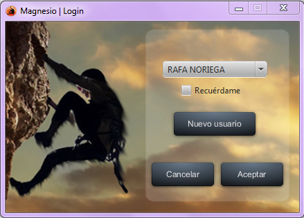

Pantalla login
Esta es la pantalla inicial. Se muestra nada mas ejecutar el programa.

Como se puede ver en la imagen, se pueden crear usuarios elegiendo la opcion -Nuevo usuario-.
Una vez rellenados los campos necesarios para que el usuario pueda acceder, si se escoge la opcion -Recuerdame- el programa guardara por defecto ese usuario y la proxima vez
que se acceda el programa accedera con ese usuario sin pasar por la pantalla del login.
Una vez hecho esto, dando al boton -Aceptar- accederiamos dentro del sistema con el usuario deseado.